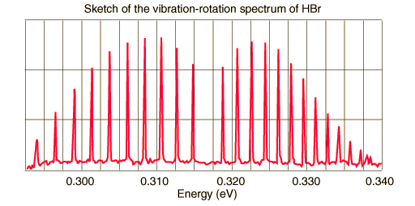

Vibration-Rotation Spectrum of HBr

Problem:
- Label the absorption lines with vibrational and rotational quantum numbers.
- Explain why there is a missing line in the center.
- Determine the force constant for this molecule as accurately as you can from this data.
- Determine the bond length of the HBr molecule and compare with a standard value.
- Explain why the lines intensities peak as they move away from the center and then diminish. See if you can use the internsities to estimate the temperature of this sample.
- Explain why the lines to the left of center are further apart in energy than the lines to the right.
|
Index
Molecular spectra concepts
Reference
Krane
Ch. 9 |